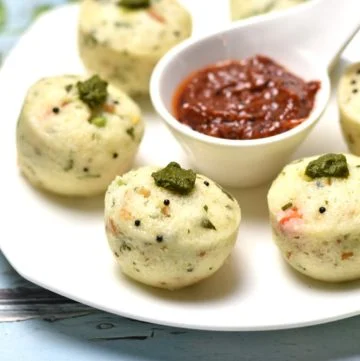

Rava Idli Recipe

Table of Contents hide
1 About Rava Idli
2 Chef Tips for Soft Instant Rava Idli
3 Faqs:
4 Video Recipe
5 Recipe Card for Rava Idli
6 Ingredients 1x2x3x
7 How to make Rava Idli with step-by-step photos
8 Notes
Rava Idli Recipe | How to Make Suji Idli | Instant Semolina Idli with
step-by-step photo and video recipe. South Indian recipes are generally popular
for their steamed and clean breakfast recipes. It is either dosa or idli which
covers most of the breakfast recipe offerings. One such easy and simple idli recipe
is the rava idli recipe which is not only tasty but also quick and easy to make.
Idli recipes are a common meal in my house and I make them frequently for
breakfast and also for lunch boxes. I try to make different types of idli
recipes and hence it does not make a monotonous morning meal. Having said that,
rava idli or semolina idli is very consistent in our weekly menu. Perhaps because
this recipe does not require previous day preparation and also no overnight fermentation.
This is a huge bonus for me. So in other words, I have to mix all the wet and dry
ingredients to make the idli batter. Once the batter is prepared, it has to be just
steamed to soft and spongy idli.That’s it! healthy and tasty idli is ready within no time.